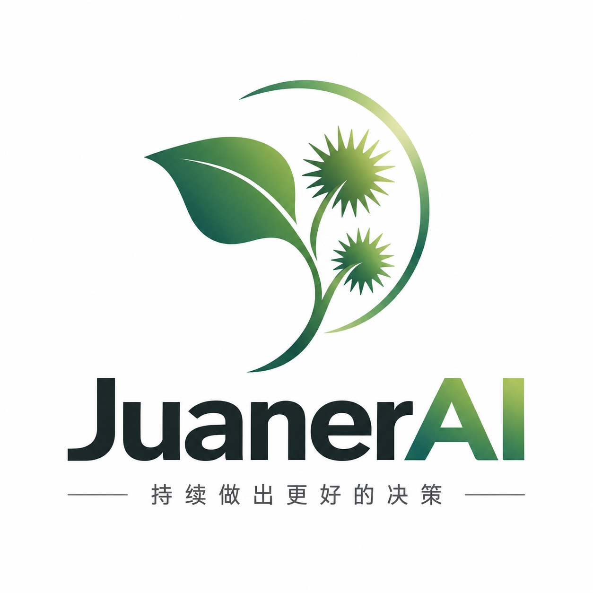

基于已确认的证据，帮我比较小范围续费触达和本轮暂不行动，形成可审阅的决策草案。
会员复购决策
已关联专业 CaseC
从已确认的 Case 继续，而不是重新分析
已绑定 revision r7：12 条已验证证据、4 个已采纳 Finding、2 项分析限制。
CASE ASSISTANT · 准备
先配置模型，再开始讨论
接入 Xiaomi Token Plan 后，你可以核对本次任务的外发内容并开始。

JuanerAI持续做出更好的决策Xanthil Desktop